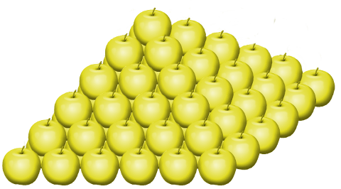

C12 Les tableaux en Python ⚓︎
Calcul de moyenne à partir d'un tableau
Ecrire une fonction qui prend en paramètre un tableau d'entiers non vide et qui renvoie la moyenne de ces entiers. La fonction est spécifiée ci-après et doit passer les assertions fournies.
def moyenne(tab):
'''
moyenne(list) -> float
Entrée : un tableau non vide d'entiers
Sortie : nombre de type float
Correspondant à la moyenne des valeurs présentes dans le tableau
'''
pass
#Jeu de tests
assert moyenne([1]) == 1
assert moyenne([1,2,3,4,5,6,7]) == 4
assert moyenne([1,2]) == 1.5
Recherche du maximum dans un tableau
Ecrire une fonction RechercheMax(tab) qui prend en paramètre un tableau d'entiers non vide et qui renvoie le maximum de ces entiers, pour un tableau vide elle doit renvoyer None. La fonction est spécifiée ci-après et doit passer les assertions fournies.
def RechercheMax(tab):
'''
RechercheMax(list) -> float
Entrée : un tableau non vide d'entiers
Sortie : nombre de type float
Correspondant au maximum des valeurs présentes dans le tableau
'''
pass
assert RechercheMax([1]) == 1
assert RechercheMax([1,2,3,4,5,6,7]) == 7
assert RechercheMax([1,2]) == 3
assert RechercheMax([-1,2,3,14,5,6,-7]) == 14
assert RechercheMax([]) == None
Bonus sur une liste de notes
On dispose d'un tableau de notes comprises entre 0 et 20 et on souhaite augmenter les notes selon la méthode suivante :
- un bonus de 1,5 points pour les notes strictement inférieures à 8
- un bonus de 1 point pour les notes comprises entre 8 et 12 (strictement)
- un demi-point à partir de 12.
Compléter la fonction bonus ci-dessous qui prend en paramètre tab un tableau de notes et renvoie un nouveau tableau nv_tab dont les éléments sont les notes augmentées de 2 points (sans toutefois dépasser 20).
def bonus(tab):
pass
Maximun avec son indice
Écrire une fonction maxi qui prend en paramètre une liste tab de nombres entiers et renvoie un couple donnant le plus grand élément de cette liste, ainsi que l’indice de la première apparition de ce maximum dans la liste.
Exemple :
>>> maxi([1,5,6,9,1,2,3,7,9,8])
(9,3)
def maxi(tab):
pass
Rechcerche maximum et minimum
Écrire une fonction RechercheMinMax qui prend en paramètre un tableau de nombres
non triés tab, et qui renvoie la plus petite et la plus grande valeur du tableau sous la
forme d’un tableau à deux valeurs ‘min’ et ‘max’. Les tableaux seront représentés sous
forme de liste Python.
Exemples :
>>> tableau = [0, 1, 4, 2, -2, 9, 3, 1, 7, 1]
>>> resultat = rechercheMinMax(tableau)
>>> resultat
[-2,9]
>>> tableau = []
>>> resultat = rechercheMinMax(tableau)
>>> resultat
[None,None]
def rechercheMinMax(tab):
pass
Écrêtage des valeurs d'un tableau
L'écrêtage d'un signal consiste à limiter l'amplitude du signal entre deux valeurs x_min et x_max. On peut également appliquer cela aux valeurs d'un tableau. Voici par exemple un tableau valeurs que l'on a écrêté entre \(-150\) et \(150\) pour donner le tableau valeurs_ecretees :
valeurs = [34, 56, 89, 134, 152, 250, 87, -34, -187, -310]
valeurs_ecretees = [34, 56, 89, 134, 150, 150, 87, -34, -150, -150]
Compléter la fonction ecrete ci-dessous qui prend en paramètre un tableau de valeurs ainsi que x_min et x_max avec x_min <= x_max et renvoie un tableau des valeurs écrêtées entre x_min et x_max.
Exemple
>>> valeurs = [34, 56, 89, 134, 152, 250, 87, -34, -187, -310]
>>> ecrete(valeurs, -150, 150)
[34, 56, 89, 134, 150, 150, 87, -34, -150, -150]
def ecrete(tab,x_min,x_max):
pass
Remplacer une valeur
Écrire la fonction remplacer prenant en argument :
- une liste d'entiers
valeurs - un entier
valeur_cible - un entier
nouvelle_valeur
et renvoyant une nouvelle liste contenant les mêmes valeurs que valeurs, dans le même ordre, sauf valeur_cible qui a été remplacé par nouvelle_valeur.
La liste passée en paramètre ne doit pas être modifiée.
Exemples
>>> valeurs = [3, 8, 7]
>>> remplacer(valeurs, 3, 0)
[0, 8, 7]
>>> valeurs
[3, 8, 7]
>>> valeurs = [3, 8, 3, 5]
>>> remplacer(valeurs, 3, 0)
[0, 8, 0, 5]
>>> liste
[3, 8, 3, 5]
def remplacer(tab,valeur_cible,nouvelle_valeur):
pass
Plus longue période de gelées
Un météorologue a relevé les températures au lever du jour dans sa rue. Il souhaite déterminer la durée de la plus longue période de gelées consécutives durant ces relevés.
Vous devez écrire une fonction gelees(temperatures) qui renvoie la longueur de la plus longue séquence de nombres négatifs ou nuls consécutifs dans la liste.
Les températures sont données sous forme d'une liste de nombres :
temperatures = [2, -3, -2, 0, 1, -1]
Si la liste est vide, la fonction renverra la valeur 0.
On rappelle que l'eau gèle à partir de 0°C inclus.
Exemples
>>> gelees([2, -3, -2, 0, 1, -1])
3
>>> gelees([3, 2, 2])
0
>>> gelees([])
0
def gelees(temperatures):
pass
Défi tiré de c0d1ngUP 2015
Consulter l'énoncé du pydéfi Le lion de Némée.
Ce défi est tiré de c0d1ngUP 2015
Histoire
Le premier travail qu'Eurysthée demanda à Hercule fut de lui ramener la peau du lion de Némée. Le terrible animal vivait dans la forêt d'Argolide et terrorisait les habitants de la région.
Hercule traversa donc la forêt d'Argolide à la recherche du lion. Là, il vit que des petits panneaux avaient été fixés sur certains arbres. Sur chaque panneau, le nom d'une divinité était inscrit. Hercule nota tous les noms qu'il rencontra.
Approchant de l'antre du lion, il vit, gravé dans la pierre :
- La lettre "A" vaut 1,
- la lettre "B" vaut 2,
- ...
- jusqu'à la lettre "Z" qui vaut 26.
Ainsi, le mot : "BABA" vaut 6 (=2+1+2+1). Cherche la valeur de chaque mot, classe-les de la plus petite valeur à la plus grande, et prononce les mots dans cet ordre : le lion se rendra à toi.
Hercule considéra sa liste de divinités :
ARTEMIS ASCLEPIOS ATHENA ATLAS CHARON CHIRON CRONOS DEMETER EOS ERIS
EROS GAIA HADES HECATE HEPHAISTOS HERA HERMES HESTIA HYGIE LETO MAIA
METIS MNEMOSYNE NYX OCEANOS OURANOS PAN PERSEPHONE POSEIDON RHADAMANTHE
SELENE THEMIS THETIS TRITON ZEUS
Voyons : ARTEMIS vaut 85, donc il faut la placer avant ASCLEPIOS qui vaut 99...
Défi
Pouvez-vous aider Hercule, en lui indiquant dans quel ordre il doit citer les divinités ? Donnez simplement la liste des valeurs associées aux dieux). On verra ultérieuement pour résoudre le problème posé.
-
Écrire une fonction prenant en paramètre une lettre et qui renvoie sa «valeur». Pour rappel:
🐍 Script Python>>> ord('A') 65 -
Écrire une fonction prenant en paramètre une chaîne de caractères et qui renvoie sa «valeur». Vous devez créer une liste la fonction de la question .
-
Créer la liste des valeurs des divinités.
Pour la fonction split utilisée ci-dessous, voir sur cette page.
| 🐍 Script Python | |
|---|---|
1 | |
def valeur(lettre):
pass
def valeur_mot(mot):
pass
def liste_valeur_mot(message):
pass
Défi tiré de c0d1ng 2015
Histoire
Les Hespérides, filles d'Atlas, habitaient un merveilleux jardin dont les pommiers donnaient des pommes en or. Pour son 11e travail, Eurysthée demanda à Hercule de ramener ces pommes. Une fois atteint le jardin merveilleux, l'oracle Nérée apprit à Hercule qu'il pourrait repartir avec une partie des pommes... à condition qu'il montre ses facultés en calcul mental. Nérée lui tint ce propos :
J'ai empilé les pommes d'or pour toi, sous la forme d'une pyramide. L'étage le plus haut ne contient qu'une pomme. L'étage juste en dessous forme un carré 2x2 (contenant 4 pommes), l'étage juste en dessous forme un carré 3x3 (contenant 9 pommes). La pyramide que tu vois contient 50 étages. L'étage de base contient donc 2 500 pommes... Je suis d'accord pour te laisser partir avec les pommes contenues dans certains étages. Précisément, si un étage contient un nombre de pommes multiple de 3, tu peux l'emporter. Si tu m'annonces combien de pommes tu emporteras au total, je te laisserai partir avec les pommes...

Pour relever ce défi, vous devez aider Hercule en lui indiquant le nombre de pommes qu'il pourra emporter. Par exemple, si la pyramide n'avait compté que 6 étages comme indiqué sur la figure suivante, chaque étage aurait été composé de : 1, 4, 9, 16, 25 et 36 pommes. Hercule aurait pu emporter les 9 pommes de l'étage 3 (car 9 est un multiple de 3) et les 36 pommes de l'étage 6 (car 36 est un multiple de 3). Au total il aurait donc emporté 45 pommes. Mais combien peut-il en emporter pour une pyramide de 50 étages ?
Répondre au pydéfi Le jardin des Hespérides.
def defi2(nbetages):
pass